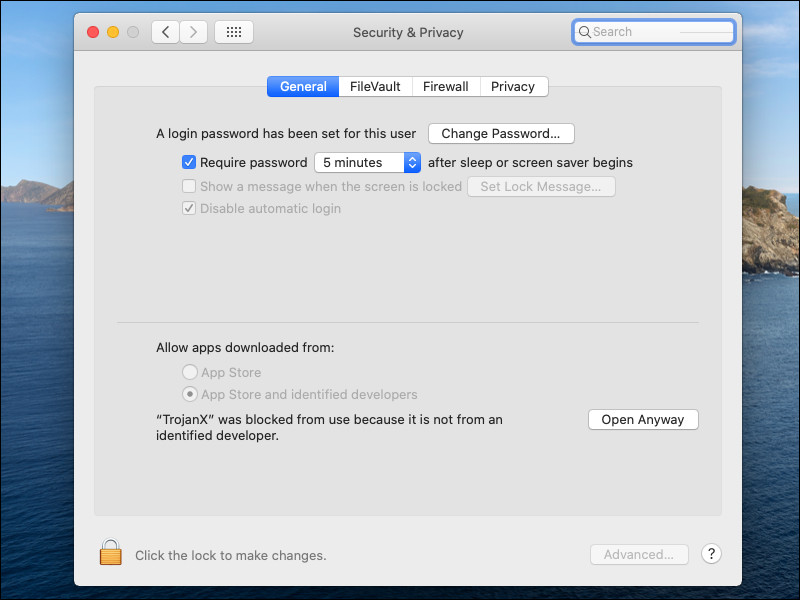
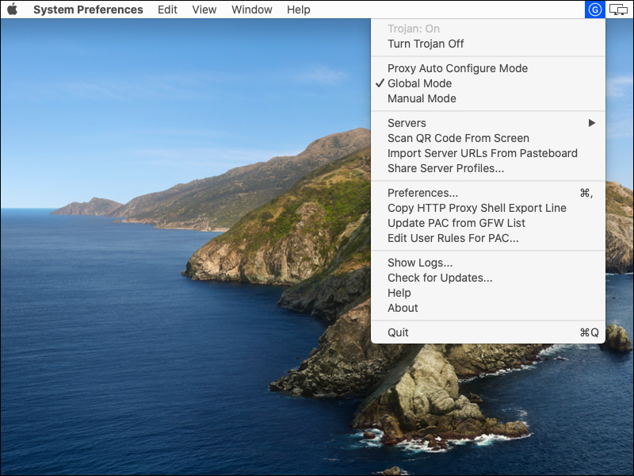

How to Install, Configure, and Run Trojan-GFW
Trojan-GFW is intended to be an unidentifiable mechanism to help you bypass network restrictions such as the Great Firewall (GFW).
This page gives instructions for installing Trojan-GFW on CentOS 8 and Debian 10+ servers. Note that CentOS 8 reaches end-of-life on December 31, 2021. Therefore Debian is recommended. Debian 10 is nicknamed “buster,” and Debian 11 is nicknamed “bullseye.”
We also give instructions for Windows, Linux, macOS, Android, and iOS clients.
1. Server
1.1. Prerequisites
You will need a domain name as well as your server. Set up a DNS A record pointing from your domain name to your server’s IP address. The domain name
used in the examples is example.com with a sample hostname of www.example.com.
1.2. Create Camouflage Website
Install and start Nginx. On CentOS:
yum install nginx -y
systemctl enable nginx
systemctl start nginx
On Debian or Ubuntu:
apt install nginx -y
systemctl enable nginx
systemctl start nginx
Edit the Nginx default site configuration file:
- On CentOS, edit
/etc/nginx/nginx.conf - On Debian or Ubuntu, edit
/etc/nginx/sites-available/default
Set the server name. For example, with our hostname of www.example.com, we would change the line for server_name to read:
server_name www.example.com;
Save the file. Restart Nginx with its new configuration:
nginx -t
systemctl restart nginx
systemctl status nginx
Add some sample content to the web server. On CentOS:
yum install wget zip unzip -y
wget https://github.com/arcdetri/sample-blog/archive/master.zip
unzip master.zip
cp -rf sample-blog-master/html/* /usr/share/nginx/html/
On Debian or Ubuntu:
apt install zip unzip -y
wget https://github.com/arcdetri/sample-blog/archive/master.zip
unzip master.zip
cp -rf sample-blog-master/html/* /var/www/html/
You can now test that your basic web server and its content appear as expected in a browser by visiting http://www.example.com (of course, replacing
this example with your actual hostname).
1.3. Obtain SSL Certificate
The Let’s Encrypt project offers free SSL certificates. We will need one for Trojan.
On CentOS 8:
yum install epel-release -y
yum install certbot python3-certbot-nginx -y
certbot certonly --nginx
On recent versions of Debian or Ubuntu:
apt install certbot python3-certbot-nginx -y
certbot certonly --nginx
For other platforms, consult the EFF Certbot page.
Respond to the Certbot prompts:
- Enter your email address
- Enter
afor agree - Enter
yornto share your email address - Select the appropriate number of the host for which you require a certificate
Let’s Encrypt SSL certificates are valid for 90 days. Set everything up for automatic renewal every 90 days. On CentOS 8:
echo "0 0,12 * * * root python3 -c 'import random; import time; time.sleep(random.random() * 3600)' && certbot renew -q" | sudo tee -a /etc/crontab >
/dev/null
On recent versions of Debian or Ubuntu:
certbot renew --dry-run
Make your Let’s Encrypt certificates and keys readable and your Let’s Encrypt directories executable:
chmod -R +rx /etc/letsencrypt
The web server is now set up.
1.4. Install Trojan
Install Trojan from the repositories. On CentOS 8:
yum config-manager --set-enabled PowerTools
yum install trojan -y
On Debian 10+ or Ubuntu 20.04+:
apt install trojan -y
For other platforms, consult the Trojan-GFW wiki on GitHub.
1.5. Create SystemD Service
Creates a systemd service file in /etc/systemd/system/trojan.service.
[Unit]
Description=trojan
Documentation=man:trojan(1) https://trojan-gfw.github.io/trojan/config https://trojan-gfw.github.io/trojan/
After=network.target network-online.target nss-lookup.target mysql.service mariadb.service mysqld.service
[Service]
Type=simple
StandardError=journal
User=nobody
AmbientCapabilities=CAP_NET_BIND_SERVICE
ExecStart=/usr/bin/trojan /etc/trojan/config.json
ExecReload=/bin/kill -HUP $MAINPID
Restart=on-failure
RestartSec=1s
[Install]
WantedBy=multi-user.target
Save the systemd service file.
1.6. Configure Trojan
Configure Trojan by editing the configuration file /etc/trojan/config.json. Replace the template values by your actual values:
- Insert your own value for
password1and remove the trailing comma. - Delete the line for
password2 - Your certificate is in
/etc/letsencrypt/live/www.example.com/fullchain.pem, so specify that on thecertline. - Your key is in
/etc/letsencrypt/live/www.example.com/privkey.pem, so specify that on thekeyline.
Save the file /etc/trojan/config.json.
1.7. Configure Trojan
Make Trojan start after every reboot, and start it now:
systemctl enable trojan
systemctl start trojan
Check that Trojan is listening on port 443, while Nginx is listening on port 80:
ss -tulpn
2. Clients
2.1. Windows
Open a browser, and visit the Trojan-GFW repository on GitHub.
Download the latest release of the Trojan for Windows zip file. Right-click on the zip file and select Extract All... to unzip the zip file. In the
extracted folder named trojan, edit the file config.json:
- For
remote_addrput your actual hostname, for example,www.example.com. - Replace
password1with your choice for the password.
These values must match your server. When you have finished editing, save the file and close the editor.
Open a Command Prompt by doing Win+r, typing cmd, and clicking OK.
Change into the unzipped directory. For example, if you are on version 1.16.0, then the command to change into the directory would be:
cd Downloads\trojan-1.16.0-win\trojan
Launch Trojan by issuing the command:
trojan
You will see a message, [WARN] trojan service (client) started at 127.0.0.1:1080. This means Trojan is listening on localhost port 1080.
Leave the Command Prompt window open.
Configure your browser to use Trojan, which is listening on localhost port 1080.
- In Firefox, from the hamburger menu select Options. Under Network Settings, select Settings. Choose
Manual proxy configuration, SOCKS Host
127.0.0.1, Port1080, SOCKS v5. Choose Proxy DNS when using SOCKS v5. Click OK. - In Chrome, you can configure your browser to use a proxy server by installing and configuring the extension SwitchyOmega by FelisCatus from the Chrome Web Store. Configure it to use the SOCKS5 proxy server on
127.0.0.1port1080.
Test your browser by visiting IP Chicken. You should see your server IP address, not your client IP address.
When you’ve finished browsing, close the Command Prompt window with Trojan running in it. Set your browser back to its direct, non-proxied settings.
2.2. Linux
Open Firefox and visit the releases page for Trojan-GFW on GitHub.
Download the 64-bit Linux version of the latest release. By default it will be saved in your Downloads folder.
Open a terminal emulator. Change into your Downloads directory:
cd Downloads
Install the xz utilities. On CentOS, the package is named xz:
sudo yum install xz -y
On Debian or Ubuntu, the package is named xz-utils:
sudo apt install xz-utils -y
Extract the archive. For example, if you are on version 1.16.0, the commands would be:
unxz trojan-1.16.0-linux-amd64.tar.xz
tar -xf trojan-1.16.0-linux-amd64.tar
Change into the extracted directory:
cd trojan
Copy the sample Trojan client configuration file to the configuration file that will be used:
cp examples/client.json-example config.json
Edit the configuration file config.json. Make these changes:
- Replace remote address
example.comby your actual server name, e.g.www.example.com. - Replace
password1by your actual password. - On Linux, you need to set
verifyin thesslsection tofalse.
Save the file.
Now configure Firefox to use Trojan, which in a few moments we will make listen on localhost port 1080. From the hamburger menu in Firefox, select
Options. Under Network Settings, select Settings.
- Choose Manual proxy configuration.
- SOCKS Host
127.0.0.1. - Port
1080. - Select version SOCKS v5.
- Check Proxy DNS when using SOCKS v5.
Click OK.
Now, back in your terminal emulator, launch the Trojan executable:
./trojan
You will see a message, [WARN] trojan service (client) started at 127.0.0.1:1080. This means Trojan is listening on localhost port 1080.
Leave the terminal emulator window open.
Test your entire configuration end-to-end (client and server) by visiting IP Chicken. You should see your server IP address, not your client IP address.
In your terminal emulator, do Ctrl+c to end Trojan. Close the terminal emulator. Set Firefox back to its direct, non-proxied settings.
2.3. macOS
Download the TrojanX app for macOS from GitHub.
You will need to override the macOS security settings, since the developer is unknown. In macOS Catalina and macOS Mojave, when an app fails to install because it hasn’t been notarized or is from an unidentified developer, it will appear in System Preferences > Security & Privacy under the General tab. Click Open Anyway.
An icon (P in a circle) appears in the menu bar toward the top right of your desktop. Click this icon to open the options menu.
Set Global Mode on. The icon changes to a G in a circle.
Select Servers and then Server Preferences to add a new server. Enter the host address and password, and click OK.
In Safari, visit IP Chicken to confirm your IP address.
2.4. Android
Install Igniter Trojan Android Client from Google Play or GitHub.
Open the Igniter app. Insert values corresponding to your server.
Click the START button. Android warns you that Igniter wants to create a VPN connection. Click OK.
Test your entire configuration end-to-end (client and server) by opening a browser on your Android device and visiting IP Chicken. You should see your server IP address, not your client IP address.
Click the STOP button to terminate.
Note that we do not generally recommend mobile computing in environments where your security is threatened.
2.5. iOS
There are no free apps for iOS, but you can try Shadowrocket.
Note that we do not generally recommend mobile computing in environments where your security is threatened.
3. Get Help and Report Issues
You can find more information on Trojan on the Trojan wiki.
If you have any problems, here are some steps you can take to troubleshoot.
Firstly, double-check that your client configuration file is an exact match for the settings on your server.
On the server look for messages with these commands:
systemctl status trojan
journalctl -xe
journalctl -u trojan
If you still have a problem, you can create a new issue for the software you are using:
Updated 2021-06-14